Geographic Databases Project: Runoff in Iowa
Introduction
In recent history, nitrate runoff and pollution has silently grown into a problem that has stilted Iowa’s cancer rates to the top of the country. Nitrates are not dangerous unless consumed (Iowa Environmental Council), and Iowa’s waterways are the catalyst for pollution and transport of nitrates to its drinking water. According to the IEC, nitrate polluted drinking water is linked to birth defects, and many cancers. The strongest links from nitrate to health issues were found to be neural tube birth defects, thyroid disease, and colorectal cancers. Iowa’s natural water system can be mapped with streams, rivers, and watersheds, and it’s these features that can provide us a starting point for understanding how nitrate pollution moves throughout the state. Some seeps deeper into groundwater systems, some flows straight to the Missouri or Mississippi Rivers. Understanding nitrate transport throughout the state of Iowa can be a first step into mitigation solutions.
Runoff is the phenomenon that occurs when the ground encounters more water than it can withstand. For instance, if a strip of farmland gets hit with 1 ½” of rain per hour, but can only soak up 1” of rain per hour, that area will see ½” runoff per hour, and more hours of rainfall will compound the runoff accordingly. The connection to pollution is that commercial manure applicators, facilities that produce manure to be used to fertilize farms, may leak. This pollution then finds its way into a river or across a farm as runoff, eventually seeping into a groundwater source.
Our research questions that we are hoping to answer are as follows:
- In which regions of Iowa is the highest amount of manure produced, and where can the impact be found?
- What are the main factors that affect runoff risk in any one part of Iowa?
- What are the SQL queries that can further explain this environmental problem?
- What additional issues can an effort to reduce pollution (cleaning it up and preventing its discharge in the first place) bring about?
Database Structure and Implementation
Spatial Reference System
Every layer in our database is projected to WGS1984 (EPSG 4326). It’s important for us to maintain a uniform projection so queries can be run seamlessly with all polygon, line, and point geometries. We chose WGS84 because it best supports PostGIS functions like ST_Intersects, ST_Within, and ST_Contains.
Data Source Justification
In this project we designed a database that uses primarily natural hydrological and human impact data, but also implements administrative boundaries to add an extra layer of insight when needed. These datasets are to allow us to analyze and visualize agricultural runoff- specifically nitrate contamination- and how it moves through Iowa and potentially puts communities at risk. After instructor feedback, the database was designed to emphasize the natural datasets (rainfall, watersheds, streams, land cover), but keep the human impact data (manure applicators, water wells, counties) to link natural drivers and health indicators.
Data Layers and Sources Used
This layer contains all of the river watersheds in Iowa. These watersheds are displayed in ArcPro as main watersheds but are assigned a region, subregion, main basin, and subbasin in the corresponding attribute table. The majority of subbasins (~⅔) belong to the upper Mississippi region, which make up the watersheds in Central and Eastern Iowa. The last ⅓ of subbasins belong to the Missouri river region and are found in the Western third of Iowa. According to the attribute table, there are 13 columns in this dataset that describe each subbasin’s region, area, code, and HUC category. The code is the primary key as it is unique to each subbasin. Images of both the county file and watershed file are the following.
Manure Applicators (public.manure_applicators) are point sources of agricultural waste rich in nitrates. Commercial manure applicators constitute any facility or place that partakes in the storage or transport of manure, a common fertilizer used by Iowa farmers. They can be found throughout the state, but the highest concentration is located in the Western half of Iowa, with the largest cluster in the Northwest counties of Sioux and Lyon.
Land Cover (public.land_cover) is from NLCD. We use DN codes 81 and 82 for pasture/hay and cultivated crop classifications. These support determination of runoff potential.
Rainfall (public.rainfall) is the rainfall dataset that details the level of rainfall that Iowa received in 2025. Per the dataset, the north central region, with Iowa’s great lakes received the most rainfall, with other pockets of high rain in the west and east. The south central region received the least rainfall. Unlike the other datasets, this set is a pixel file rather than a point or polygon file.
Water wells (public.water_wells) refer to any well that provides drinking water to a population. The largest cluster of wells by far is found along Iowa’s western border, with the southern strip of Iowa having the fewest of both wells and manure facilities. These wells are a key source of drinking water, especially in areas where major rivers flow. In our analysis, they serve as another point of nitrate exposure by identifying drinking-water infrastructure that may be at risk of pollution.
Iowa counties (public.iowa_counties) is a polygon file of all of Iowa’s 99 counties, on which our entire database is centered. This dataset is necessary because data on population and economy is collected on a county rather than watershed basis. Its attributes include the perimeter, county ID, name, and state abbreviation. The primary key is the county ID because it is the unique identifier.
Data Import and Construction of the Spatial Database
Data was cleaned and imported using QGIS and PostGIS utilities:
- Geometry validation & reprojection - QGIS
- Data Importing - QGIS
- Spatial indexing - Figure 1: Spatial Index Query
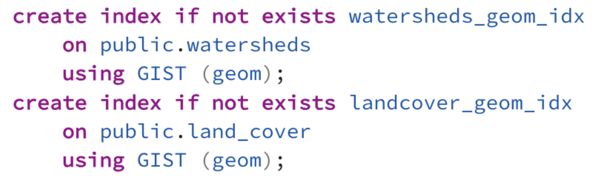
All other relationships occur spatially, and not through foreign keys since our hydrological analysis is driven by geographic containment, adjacency, and intersection.
Figure 2: Entity-Relationship Diagram
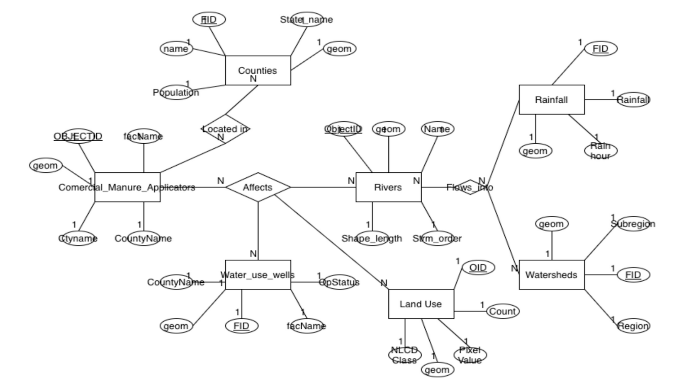
Our entity-relationship diagram details each dataset used and the attributes that are appropriate for our database design. We have seven entities for seven datasets, and each one has 4-5 relevant attributes that are important in a database about runoff. The county entity has population, name, FID, and geometry as the attributes, with FID as the primary key. Each manure applicator is located within a county, and their attributes are name, ID, geometry, city name, and county name. These manure applicators affect the quality of water in the rivers, land, and wells. The rivers are the central link in the chain with respect to pollution, as they are both a cause and effect of pollution. The rivers can receive pollution from a manure storage facility nearby and discharge it into a town’s well. When looking at the river in the ER diagram, the attributes that are important to understanding the river’s role in pollution are the length, stream order, ID, geometry, and name are the appropriate attributes to include in our database. These rivers flow through land, and when they have pollution from a manure facility, that pollution seeps into the land and will affect crops being grown.
On a similar note, land use can also be a source of pollution as well as the second casualty if the land in question is used to treat, store, or transport manure or other hazardous material. The relevant attributes are the land’s geometry, NLCD class, pixel value, ID, and count. The final casualty of manure applicators is the water use wells. The wells are the most important factor to track due to their importance in the supply of drinking water. A well being impaired has the further impact of shutting down water access to communities and entire towns, depending on the well’s size and area of service. The final to discuss is what can impact the river; the watershed and rainfall. Levels of rain can be instrumental in the extent to which any amount of pollution travels. If a long day of rain hits northern Iowa, any pollution discharged by nearby manure facilities will travel much faster than it could with no rainfall. More rainfall means faster travel for pollution and possible inundation of crop fields. The important attributes associated with the rainfall dataset is the level of rain per hour, rainfall amount within 2025, the ID of each pixel, and the geometry of each pixel. With regard to the watershed, the runoff flows through the watershed the same way the rivers do and flow through different subbasins. For instance, any runoff that gets produced in the Little Sioux subbasin may end up in the lower Iowa River region.
Analysis
Query 1: Manure Facilities by Watershed

The first query aggregated manure applicators into watershed subbasins to find where agricultural waste sources are most concentrated. This query uses the PostGIS function ST_Within to assign each manure facility point to a single watershed polygon, then groups by subbasin to give a count of facilities per watershed.
Query 1 Results
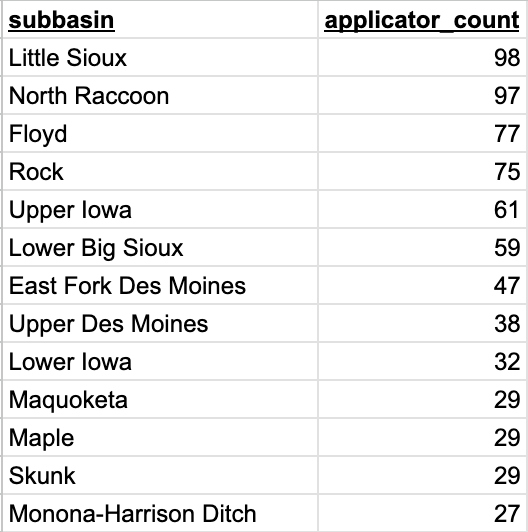
These counts help us in the next steps by flagging basins where nitrate loading from manure is likely to be highest.
Query 2

The second query defines “risky” watersheds as containing either manure facilities or having land cover classified as “pasture/hay” or “cultivated crops” (NLCD codes 81 and 82), then counts the number of wells in those risky subbasins. The output table shows that the number of wells varies a lot across the watersheds.
Query 2 Results
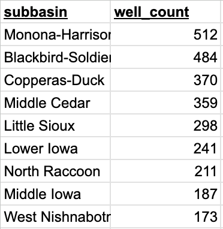
It’s worth noting here that many of these watersheds were also found in Query 1 to have high manure applicator counts (Little Sioux, Middle Cedar, Lower Iowa, Rock, North Raccoon). That overlap suggests these subbasins are both under intense agricultural use also and heavily tapped for groundwater. This makes them both relevant for potential nitrate exposure through drinking water.
Query 3

This query calculates the percent of coverage of each land cover class within each watershed by intersecting land cover and watershed polygons. It uses a lot of computations(takes 19 minutes to run), which makes sense because it computes pairwise intersections between all the watershed polygons and the large NLCD land-cover dataset. The output from the query gives us for each watershed, the fraction of area in each NLCD class. The output also shows us several watersheds that cultivated crops (NLCD code 82) exceed 80–90% of the watershed area. The top watersheds show NLCD code 82 occupying roughly 83–93% of their area. From these outputs we can distinguish the watersheds that are dominated by agriculture.
Query 3 Results
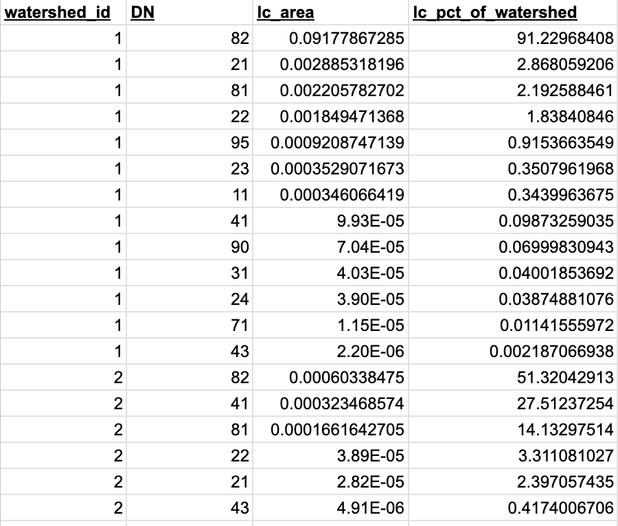
These counts help us in the next steps by flagging basins where nitrate loading from manure is likely to be highest.
Query 4

Heavy rainfall is also a factor in the transport of nutrients and drive surface runoff, so this query summarizes rainfall statistics for each watershed. It calculates average peak rainfall, maximum peak rainfall, and average hourly rainfall.
Query 4 Results
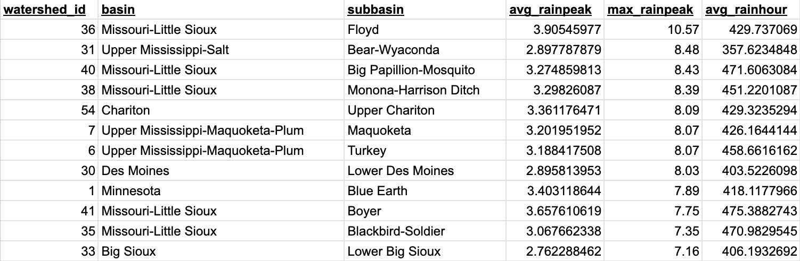
A few of these (Monona-Harrison Ditch, Little Sioux, Blackbird-Soldier, Lower Big Sioux, Middle Des Moines) appear in the first two queries, suggesting that runoff from storms might be effective in transporting pollutants towards wells and communities that are downstream.
Query 5

This query uses aerial interpolation to estimate how many people live in each watershed. In our project, we used county-level population data, however census tracts would have provided a more accurate estimation. Early revisions of the project used county-level analysis, from which we’ve shifted to watershed-level analysis. Struggles with importing made us stick with the county-level population data. This query calculates population per watershed by calculating the ratio of a county’s area that intersects a watershed and multiplying it by the county’s population. The resulting estimates show large variations in watershed populations.
Query 5 Results
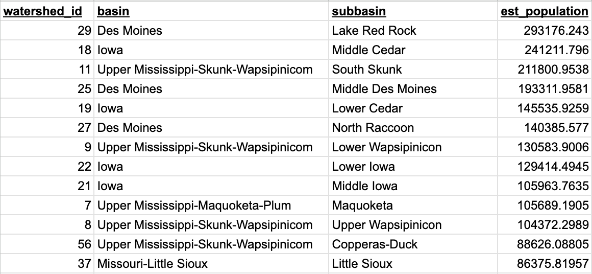
Again, we see many of the watersheds we saw in previous query outputs.
Results
The results from each query illustrate how widespread the issue of water pollution is and where the effect is the most present. Figures from each of the query's results can be found below the description of the respective query.
Query 1 Map
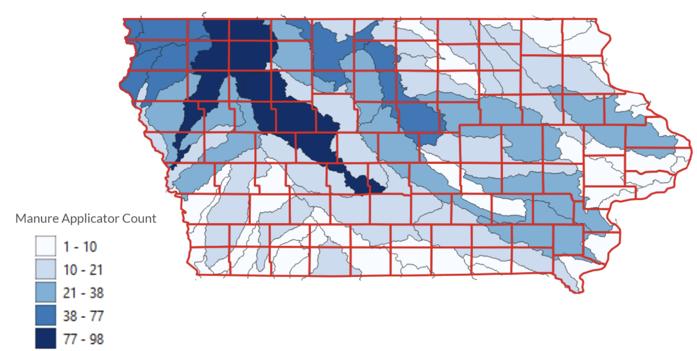
The first query’s finding shows the Little Sioux and North Raccoon have by far the most manure facilities when looking at facility numbers on a watershed basis, with 98 and 97 manure facilities respectively. These two watersheds are both in the Northwest of Iowa, where most rivers originate.
Query 2 Map
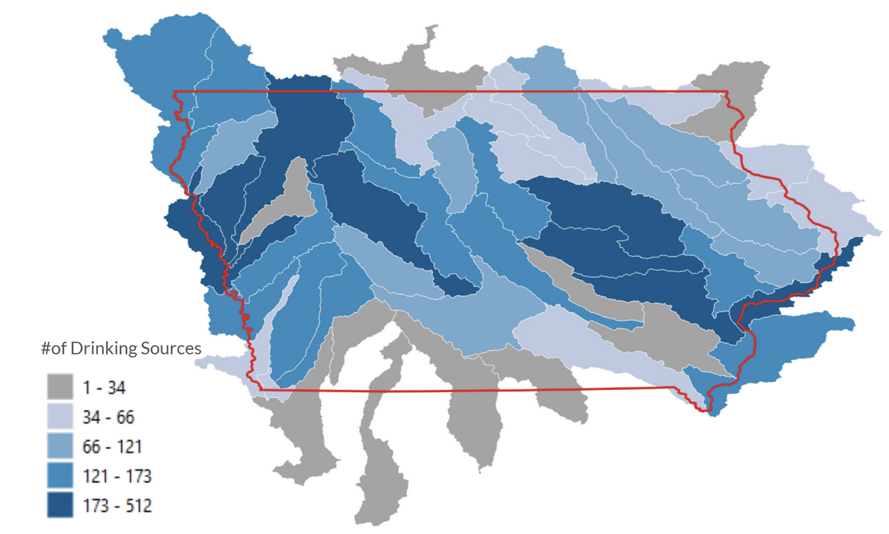
The second query shows that most water wells are located in areas with either several manure facilities or prominent agrobusiness. There is a strong concentration in the northwest and central east of Iowa, which are areas where agrobusiness is the dominant form of economic fortitude. This pattern roughly lines up with the manure facility pattern from the previous query.
Query 3 Map
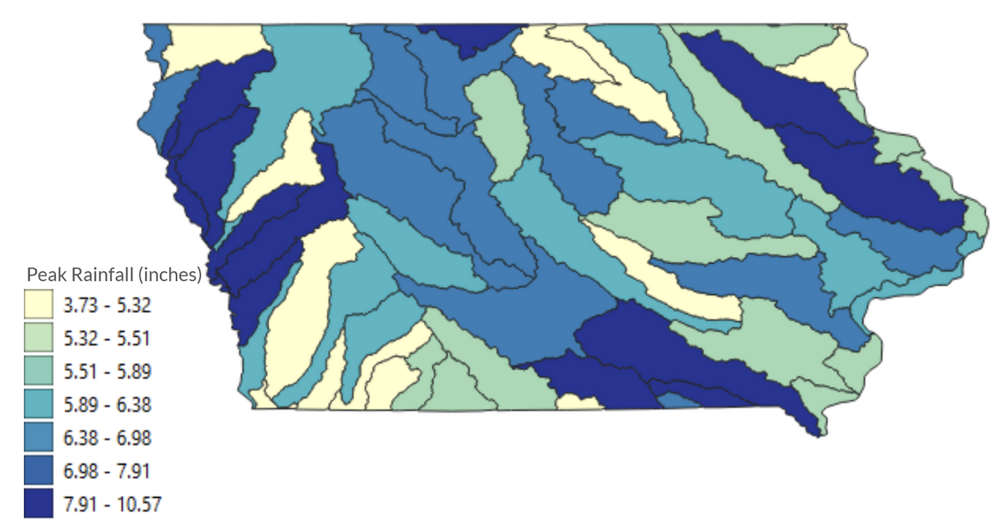
The third query shows that most of the watersheds are overwhelmingly covered by farmland, meaning that the pollution has the capability to heavily mitigate farm output in any area it flows through, which impacts economies and livelihoods. However, as previously stated, farmland has the ability to produce as well as fall victim to polluted runoff when manure is spread across a cropfield.
Query 4 Map
The fourth query’s result is that the edges of Iowa have the highest levels of rainfall, with lower levels in the center of the state by comparison. The color-coded map, where blue represents higher rainfall, backs this up.
Query 5
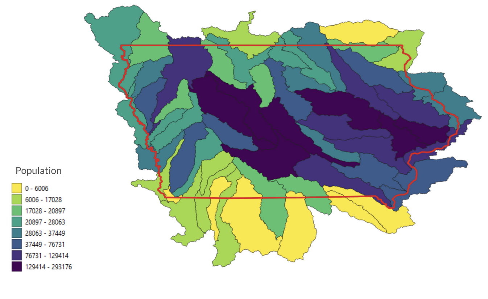
For query 5, population was estimated at the watershed level with areal interpolation based on county populations. Areas are measured in square degrees in WGS84, but the proportional population estimates are still valid, we would just need an ST_transform statement where the estimation is calculated.Watersheds with the highest estimated populations include Lake Red Rock (Des Moines basin), Middle Cedar, South Skunk, Middle Des Moines, Lower Cedar, North Raccoon, and Lower Iowa. Several of these (Middle Cedar, North Raccoon, and Lower Iowa) also rank high for manure facilities, agricultural land cover, and well density. This indicates that some of the most populated watersheds in Iowa are also most at risk for nitrate exposure.